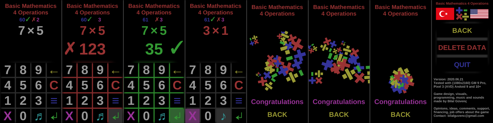

Basic Mathematics 4 Operations game is free and does not contain ads.
Basic Mathematics 4 Operations game is for student and people who would like to improve their mathematical skills. The game could be seem as finished products but I have a lot of ideas to improve it. You could join to support and see short-term, mid-term and long-term goals.
Current status of the game has below features
- Random addition, subtraction, multiplication and division are asked
- New question is asked when the correct answer is given
- All random questions are seen in the same amount
(The same question is not asked again until you have finished the entire multiplication table. All operations and all future tables work according to the same rule.)
- All wrongly answered questions can be seen again with the X key
(Active question group is indicated by the color of question and answer, and background of the X key)
- It is aimed to reinforce learning with the right target by overcoming the mistakes made
- After all of wrongly answered questions are answered correctly, questions will be switched to normal group automatically
- All correct and incorrect amounts can be deleted with the delete data button on the setting page
- Includes operations with natural numbers only
(Negative numbers are not used)
- Two numbers with two digits are used for addition and subtraction
(The question, which gives negative result, is not asked in the subtraction operation)
- Up to 10 (including 10) numbers are used in multiplication and division
(Multiplication and division can be up to 1000) - Includes interactive animated greeting screen. When 10, 100 and 100 times the correct answer is given consecutively, an interactive animated greeting screen is shown
- Supports multi language, English & Turkish are supported for now
- Upper half of screen could be used instead of enter key
DARK THEME
- Protects your eyes
- You can also play comfortably in the dark environment
- Reduces battery consumption on OLED displays
3 DIFFERENT SOUND SETTINGS
- Music and sound effect are turned on
- Only sound effect is on, music is off
- Silent
BRIEFLY
- Learn basic math 4 operations by having fun
Free download and support
https://mathematics4free.page.link/github
Turkish translation:
Temel Matematik 4 İşlem oyunu ücretsizdir ve reklam içermez.
Temel Matematik 4 İşlem oyunu öğrenciler ve matematik yeteneklerini geliştirmek isteyenler içindir. Oyun bitmiş ürün gibi görünebilir ama onu geliştirmek için pek çok fikrim var. Kısa, orta ve uzun dönem hedeflerimi görmek ve desteklemek için katılabilirsiniz.
Oyunun geçerli durumu aşağıdaki özelliklere sahiptir
- Rastgele toplama, çıkarma, çarpma ve bölme işlemi sorulur
- Doğru cevap verilince yeni soru sorulur
- Tüm sorular rastgele olmasına rağmen aynı miktarda görülür
(Çarpım tablosunun tamamını bitirmeden aynı soru tekrar sorulmaz
tüm işlemler ve tüm gelecek tablolar aynı kurala göre çalışır) - Yanlış yanıt verilen tüm sorular X tuşu ile tekrar görülebilir
(X tuşunun, sorunun ve yanıtın rengi ile hangi soru gurubunun yapıldığı belirtilir) - Yapılan yanlışların üzerine gidilmesi ile öğrenmenin doğru hedefle pekiştirilmesi amaçlanır
- Yanlış yanıtlanan soruların tamamı doğru yanıtlandıktan sonra otomatik olarak normal sıradaki sorulara geçilir
- Ayarlar tuşundan verileri sil ile tüm doğru yanlış miktarları silinebilir
- Sadece doğal sayılarla işlemleri içerir
(Negatif sayılar kullanılmamaktadır) - Toplama ve çıkarma işlemlerinde en çok iki basamaklı iki sayı kullanılır
(Çıkarma işleminde negatif sonuç verebilecek soru sorulmaz) - Çarpma ve bölmede 10'a kadar (10 dahil) sayılar kullanılır
(Çarpım ve bölünen en fazla 1000 olabilir) - Animasyonlu ve etkileşimli tebrik ekranı eklendi. Art arda 10, 100 ve 100'ün katı doğru yanıt verildiğinde dokunarak etkileşimi de olan animasyonlu tebrik ekranı gösterilir
- Çoklu dili destekler, şimdilik İngilizce ve Türkçe desteği vardır
- Ekranın üst yarısı enter tuşunun yerine kullanılabilir
KOYU TEMA
- Gözlerinizi korur
- Karanlık ortamda da rahat oynayabilirsiniz
- OLED ekranlarda pil tüketimini azaltır
3 FARKLI SES AYARI
- Müzik ve ses efekti açık
- Sadece ses efekti açık, müzik kapalı
- Sessiz
ÖZETLE
- Eğlenerek matematik 4 işlemi öğrenirsiniz
Ücretsiz indirme ve destek
https://mathematics4free.page.link/github